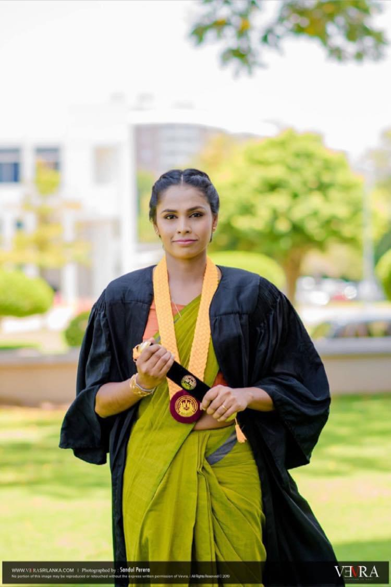
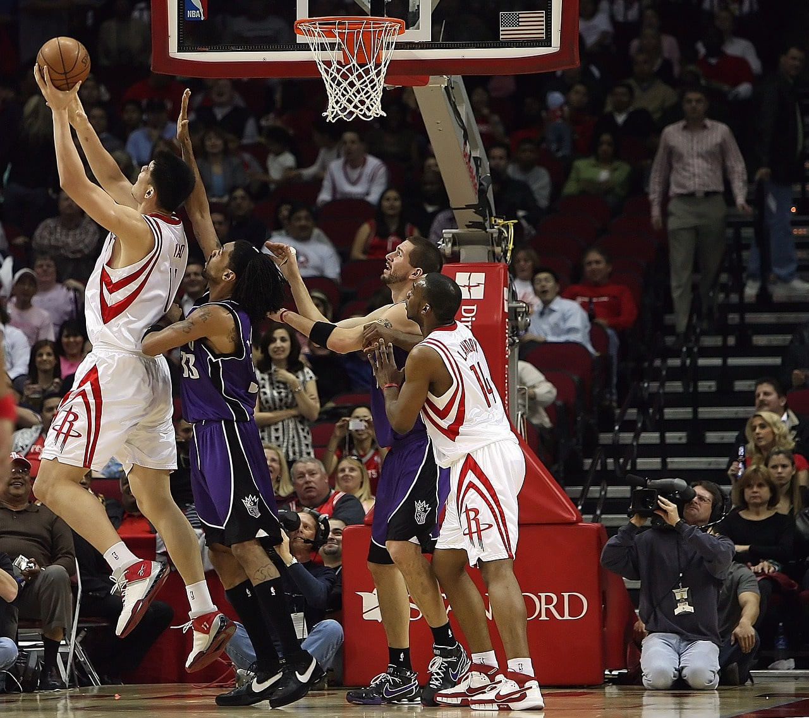
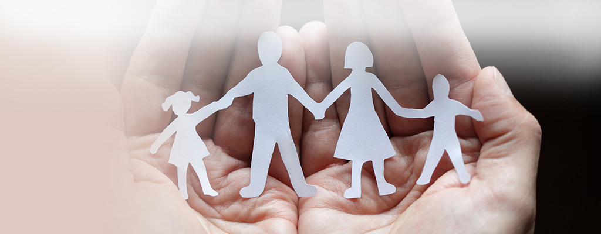
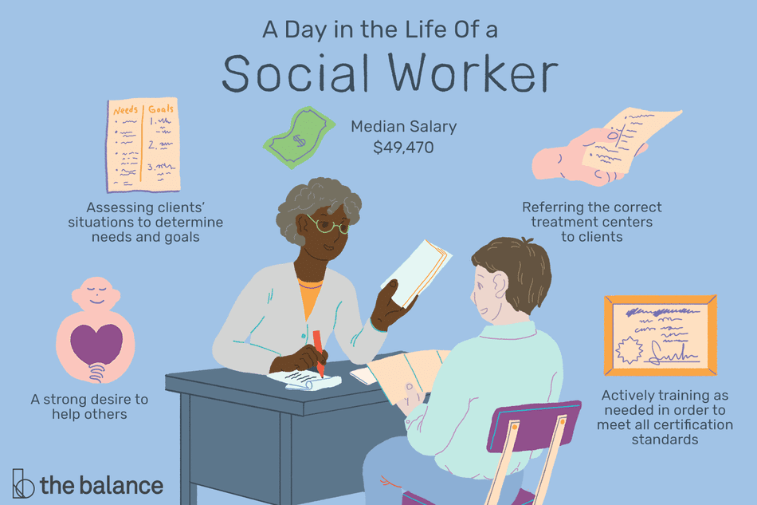

|  |
I'm seemahewage malki lakshani silva was born on january 9th, 1995 in Sri Lanka. I am 26 years old. My home town is Kalutara situated in Western province,
Sri Lanka. Usually I like travelling, join hand in Volunteer Work and Community Services, reading books, Playing and watching movies in my leisure time which help me to relax my mind and body.
My family is consisting of my spouse, mother in law, father in law and myself. My spouse is worked at cricketerman .
|
Contact Information |
Personal Details |
|||||
|
Phone : +94750937777 Email : malkilakshani1995@gmail.com Box 604, kyoto, kyoto city Japan |
Trained for Certificate First Aid Level 02 (two day) conducted by the Sri Lanka Red Cross Society. |
|||||
Skill Highlights |
Working Experience |
|||||
|
Education & Certifications Qualification |
|||||
Skills |
||||||
|
Hobbies basketball Basketball at the Summer Olympics has been a sport for men consistently since 1936. Prior to its inclusion as a medal sport, basketball was held as a demonstration event in 1904. Women's basketball made its debut in the Summer Olympics in 1976. FIBA organizes both the men's and women's FIBA World Olympic Qualifying Tournaments and the Summer Olympics basketball tournaments, which are sanctioned by the IOC.
My Unforgetable Memory Family Rehabilitation Centre in Sri Lanka The International Day of Peace, sometimes officially known as World Peace Day, is a United Nations-sanctioned holiday observed annually on 21 September. It is dedicated to world peace, and specifically the absence of war and violence, such as might be occasioned by a temporary ceasefire in a combat zone for humanitarian aid access. The day was first celebrated in 1981, and is kept by many nations, political groups, military groups, and people. In 2013 the day was dedicated by the Secretary-General of the United Nations to peace education, the key preventive means to reduce war sustainably.
My Social work industry Social work is an academic discipline and practice-based profession that concerns itself with individuals, families, groups, communities and society as a whole in an effort to meet basic needs and enhance social functioning, self-determination, collective responsibility, and overall well-being. Social functioning is defined as the ability of an individual to perform their social roles within their own self, their immediate social environment, and the society at large. Social work applies social sciences, such as sociology, psychology, political science, public health, community development, law, and economics, to engage with client systems, conduct assessments, and develop interventions to solve social and personal problems and to bring about social change. Social work practice is often divided into micro-work, which involves working directly with individuals or small groups; and macro-work, which involves working with communities, and – within social policy – fostering change on a larger scale.
|
|||||
| I'm Here | My Music | My Videos | |